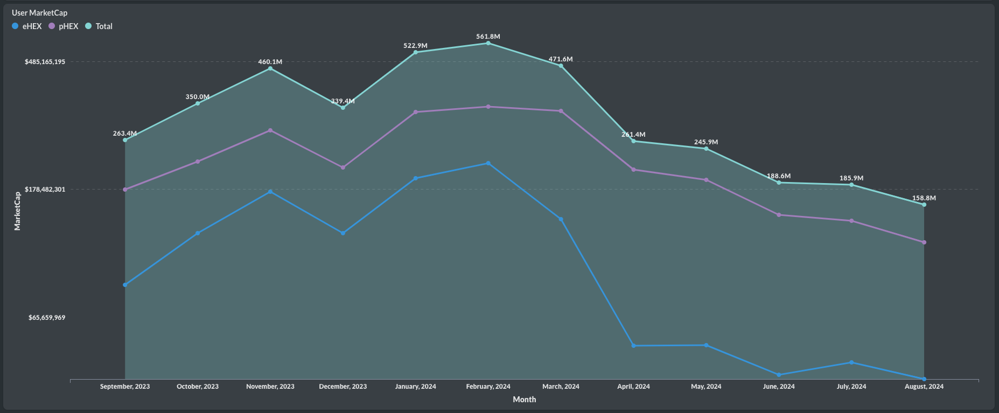
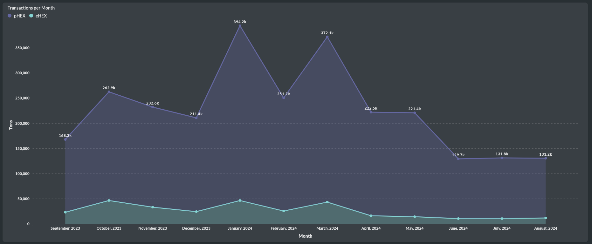

Staking
üÜôüÜôüÜô Good Morning, World! #HEX metrics are up, up, and up! The price is not up yet, but keep your fingers crossed. Here is the $HEX monthly report for Staking for August:
More $pHEX and $eHEX staking resulted in a total of 4,711 new stakes. This matches the staking counts seen in April for pHEX and in March for eHEX.
Not only are the staking counts up, but more HEX was staked on #Pulsechain as well as on #Ethereum. In total, 11.2 billion HEX was staked.
And if that wasn't enough, the length of those wonderful stakes in August went looooooong—the longest within a year. We haven't seen this level of conviction for a long time. The average staking length was 1,600 days for pHEX and 1,400 days for eHEX.

Even the average principal staked increased to 4.3 million eHEX per stake and 2 million pHEX per stake. Stay tuned for the next update on growing HEX metrics in the coming days! üòé

Penalties
❓Who's gonna quit #HEX? Apparently nobody. The penalties in the $HEX staking system remained stable in August. This is Part 2 of the HEX monthly report.
After this year's surge of big whales quitting their staking positions and taking massive penalties, we've seen a big reduction since March. This suggests that no significant players are exiting HEX anymore, even though we still observe larger sellers in $PLS and $PLSX that drags the HEX price with it. In August, the total penalties remained around 90 million HEX, split evenly between $eHEX and $pHEX.
The most notable observation in August was that Late Stake penalties increased even further on $eHEX, with 1,277 late stakes. This is understandable, given that fees on #Ethereum have become very affordable. However, this number is still relatively low.

On the other hand, Emergency End Stake penalties continued to decrease for pHEX, and the $eHEX numbers are not significantly higher either.

The ratio of Emergency End Stakers (EEStakers) to Active Stakers is 0.1% for pHEX and 0.07% for eHEX. The eHEX ratio has begun to approach the pHEX ratio, again due to lower fees on #Ethereum.
Adoption
50%⬆️There were 50% more new users for #HEX in August than in July. Adoption has stabilized! This is Part 3 of the $HEX monthly report.
At the end of summer, we have seen 3.2k new users in HEX, similar to the beginning of summer in May. While adoption has slowed down, we are stable, as shown in the following charts.
June, July, and August had a similar number of total active users, over 17k, with a slight recent increase.
A similar trend is observed for active $eHEX and $pHEX users, with around 15k for pHEX and 4k for eHEX.
The number of active stakers remains the same; no new stakers have joined, but no one has left either. It appears that staking adoption has flattened, although it is still higher than one year ago. We peaked at 131.2k in March and have remained consistently at 131.1k in total.
Staking Ratios
üåä$500k+ was net staked into #HEX in August. Is the tide turning? Let's explore this in Part 4 of the HEX monthly report, focusing on staking ratios.
We recently reported on the net flow of $ value into staking $HEX, but August had not yet concluded. In the second half of August, the net flow turned positive, breaking the pattern of net outflows seen in previous months. We are positive again with $500k+ for the first time since February, even though the average combined price continues to decline to $0.0059. Is trust returning to HEX staking?
Most of the staking was done in $pHEX, as discussed in the previous parts of the report. The starting vs. ending staking ratios reveal that while $eHEX is struggling to improve its ratio, the pHEX ratio is trending towards 1, having risen to 0.78. This suggests that the renewed staking appetite is primarily driven by pHEX, and most of the inflows can be attributed to pHEX.
Yield
üëÄ Look at that $eHEX yield in Part 5 of the #HEX monthly report: Yield.
Another month, another record for $eHEX staking yield! Stakers with no penalties are seeing yields as high as 72%. On average, considering all eHEX stakes that are ending, the yield is at 51%. In comparison, the $pHEX yield is lower, around 37%. The discrepancy between eHEX and pHEX can be explained by the fact that eHEX has fewer recent new stakes coming to an end. The older stakes from before BPD generally have very high yields, while pHEX has seen consistent more staking activity since its inception, resulting in a lower average yield.
This difference is also evident in the APY% values. Here are the realized APY values for $eHEX:
1 year: 11%
2 years: 15%
3 years: 21.5%
4 years: 56%
For $pHEX, stakers realized the following APYs:
1 year: 10.5%
2 years: 14.6%
3 years: 20.8%
4 years: 55.4%
Supply
üîÑThe user circulating supply increased once more for #HEX in August. This is Part 6 of the $HEX monthly report.
$pHEX saw a slight increase in user circulating supply by 200 million, bringing the total to 25.2 billion. On the other hand, $eHEX increased its user circulating supply by 2 billion units, now reaching 34.5 billion. We observed the significant yield for $eHEX in yesterday's post, and combined with a lower staking appetite, we can understand the substantial circulating supply of $eHEX. However, bear in mind that as circulating supply increases, there are also higher APYs available for #staking. Notably, the increase in $pHEX user circulating supply has slowed down significantly since March, which is something to monitor.

Despite the increase in user circulating supply, we are still seeing a decrease in user MarketCap in August due to lower prices. The combined user MarketCap is now at $158.8 million, with $118.3 million attributed to $pHEX and $40.5 million to $eHEX—quite low for a Cycle 2 coin. Wouldn't you agree?

The OA's share of circulating supply continues to decrease, especially for $eHEX. Soon, 6% will be owned by users, as the OA's share for $eHEX is now at 94.26%. The share for $pHEX remains at 95.7%. A slower distribution to users is occurring naturally, not through selling (this is for the new people). The OA is getting diluted because users are ending their stakes and are rewarded with the 3.69% annual inflation, while the OA holds most of its coins and does not stake.
Usage
üåàLet's review how #HEX was used in August, as detailed in Part 7 of the $HEX monthly report.
Usage remained stable throughout the summer. In August, there were 131k #HEX transactions, 10% of which were $eHEX transactions. This does not include Pulsechain transactions for eHEX.

I used a new approach this time by filtering out unlabelled transactions (47k unlabeled transactions), which mostly consist of MEV/Arbitrage bots, to get a clearer picture of how transaction activity is distributed. For eHEX's native activity on #Ethereum, staking took the lead with 34%, while administrative activities declined compared to previous months, now at 28%, similar to swap activity. Of all activity, 23% represents end-stake activity, while only 6.1% is start-stake activity, which saw a slight increase from last month.
For $pHEX, we observed a dominant 41% of MEV activity, even after removing many unlabelled transactions. Swap activity was lower, at 35%, while staking activity increased to 11.36%, up from 10.5%. Breaking down the main activity into smaller categories, the most popular usage of HEX is through swapping over the @piteasio Router, accounting for 20% of all activity on #Pulsechain. Pulse transactions follow with 15% when combining versions 2, 3, and 4 of the router.